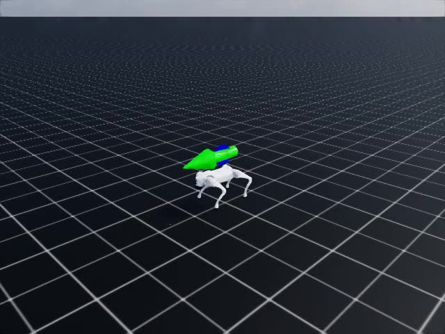
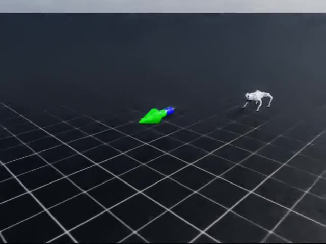
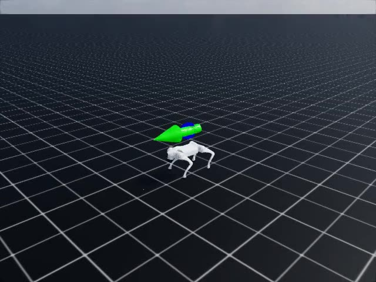
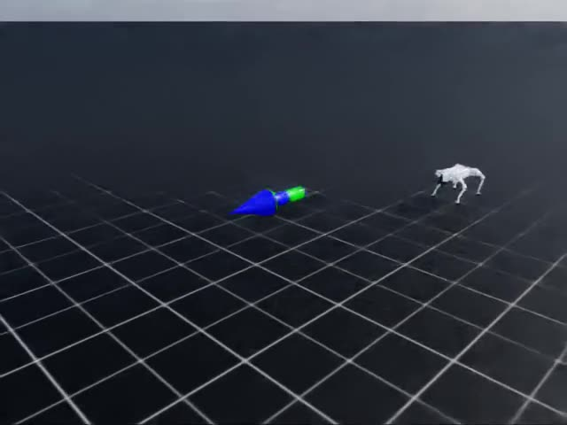

관찰

선택P_reward
검사새 E2E 확인 검사 · abnormal
교정등록 보상 복원 · restart
고정 평가RMSE 0.141 m/s · 낙상률 0.000
후속 관찰 · valid · 판정 미사용

walking yes · in-place no · falling no등록 F1 두 seed 개발판 · 처음 보는 결함 평가 아님 · 세 입력 조건 비교는 observation_only


walking yes · in-place no · falling no

walking yes · in-place no · falling no